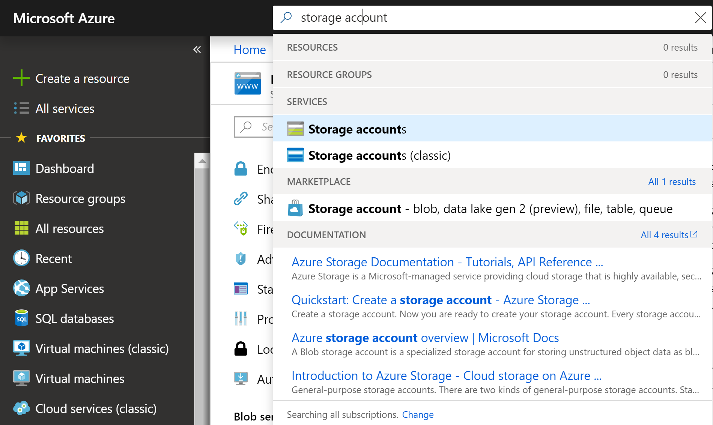
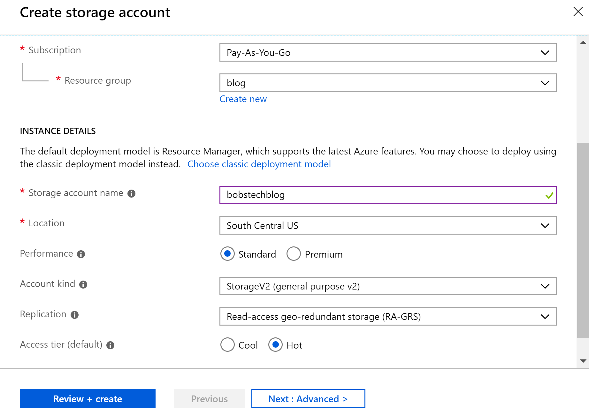
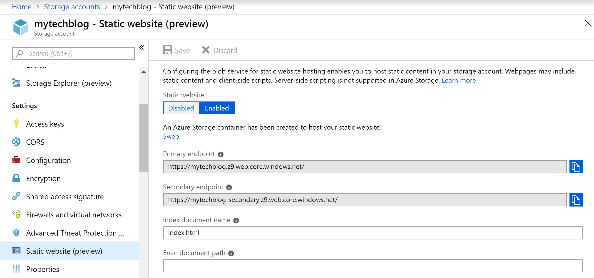
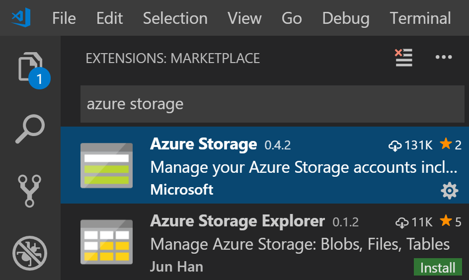
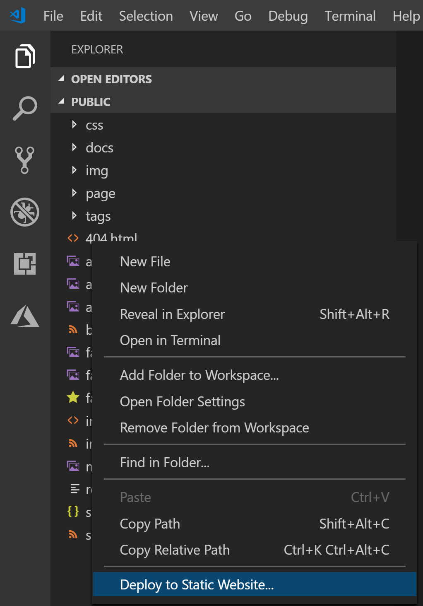
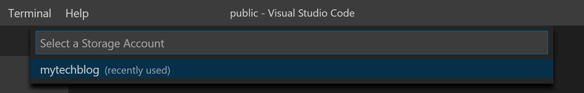
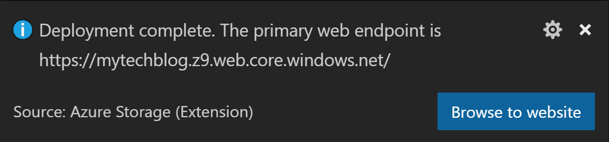

Summary
I decided to give blogging a try. I setup the most cost-effective solution I could come up with; static-html hosting on cloud blob-storage.
Initially I tried using Jekyll to generate my static pages, but due to the clunky tooling available (especially on Windows) I looked for other solutions. That is when I found Hugo. They have great documentation, modern CLI and great tooling, regardless of your OS preference.
Since I already have a Microsoft Azure account, I decided to host my static files there. Here is how I set-up my blog, from Hugo installation on Windows to publishing to the cloud.
Install Hugo on Windows
The easiest way to install Hugo is through a package manager called Chocolatey.
Once chocolatey is installed, run the following at command line/Powershell:
choco install hugo -confirm
Voila! Installation is complete.
Setup a basic blog
- Create an easy to find folder for your blogs, let’s say C:/blogs
- Run the below command, this will create a blog in the folder hugo_blog
hugo new site hugo_blog
- Now you need to get a theme for your blog, https://themes.gohugo.io/ has some solid options. Each theme has a github page with instructions on how to install.
- Once, your theme files are in your hugo_blog/themes/… and your config.toml has been updated, time to create your first post by going to your hugo_blog directory and running the command
hugo new posts/my-first-cool-post.md Be sure to have the extension, otherwise you will have problems rendering that page. If you forgot go to …hugo_blog\content\posts and delete the generated file here and try again. Do not try to rename the file and adding the extension, as this will not work.
- You can now edit my-first-cool-post.md if you like. To test run your generated blog, go to your blog root hugo_blog and run the command
hugo server -D If you did everything correctly you should now be able to view your blog locally by going to: http://localhost:1313/
Setup Azure Storage
- After signing up for Microsoft Azure, search for storage account if you haven’t set it up already and click Add.

- Fill out the configuration with your desired names, and with these settings.
- After creating the storage account, open it and navigate to **Static Website*** under Settings. **Primary endpoint** is how you will access your published blog (for now). Make sure to add **index.html** to your **index document name** field, to establish your website's entry point.
Publish to Azure using VS Code + Azure Storage Extension
- To get a compiled, release version of your blog, run the simple command below. This will generate a static html version of your blog into the public folder at the root of your blog
hugo
- I use Visual Studio Code daily, as it is one of the cleanest IDEs for Front-end development. But if you do not yet use it, you can download it here.
- Once installed, click on Extensions (lowest icon on the left), search for Azure Storage, hit install and restart VS Code

- Now you have a cool new Azure icon below the extensions one. Click on it, select login and follow the instructions. Once you put in the code, you should be able to see your storage account through VS Code. - Open the folder ...hugo_blog/public in VS Code - In VS Code Explorer (top icon on the left), assumming your are at root level of your blog, right click and select **Deploy to Static Website**.
At this point you will be prompted to select your subscription and azure storage account
You should get a success message in a few seconds
You are good to go! Keep adding pages and deploying in the same way :)